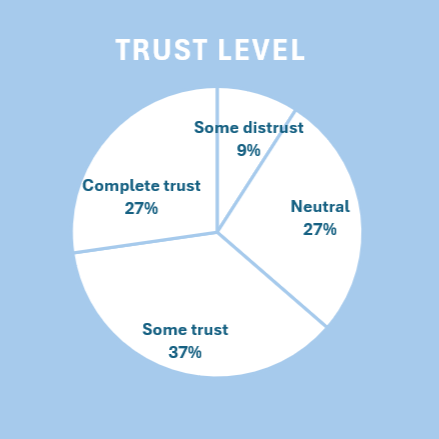

Introduction
In the contemporary digital environment, university students receive news continuously through social media, news apps, and other online platforms. Their news consumption habits can shape academic performance, critical thinking, civic engagement, and long-term decision-making.
This project investigates how university students consume and evaluate digital news, focusing on the frequency of news use, trust in different sources, verification strategies, and the perceived impact of algorithms and misinformation. Large language models (LLMs) are prompted to “pretend” to be university students and complete a structured questionnaire, allowing for a comparison of simulated student behaviors across models.
Research Questions
- How frequently do (simulated) university students consume news, and through which channels?
- What factors influence their trust in news sources and their verification practices?
- How do social media algorithms and digital platforms appear to shape their news exposure and perspectives in the LLM‑simulated responses?
Method
Questionnaire Design
A 20‑item questionnaire was developed to capture key aspects of university students’ news behaviour, including:
- Background: field of study and current student status (e.g. first‑year undergraduate, postgraduate).
- News habits: frequency of actively seeking news, time spent per day, and primary news sources (social media, news websites/apps, TV, peers, others).
- Trust and verification: trust in mainstream media organisations, frequency of verifying news, and factors influencing trust (academic credibility, transparency, recommendations, peer consensus, personal alignment).
- Digital environment: accidental exposure to news on social media, perceived impact of algorithmic curation, preferred types of news content, and importance of visual elements.
- Misinformation and concerns: confidence in identifying misinformation, methods of checking credibility, changes in news consumption, avoidance of news, reactions to conflicting reports, and concerns about the future of digital news media.
Most questions used multiple‑choice options A–E to make responses easy to compare and visualise.
LLM Data Collection
The questionnaire was given to multiple LLMs. Each model received instructions such as: “Pretend to be a university student. Answer the following questions. Use only options A–E where specified.”
Example items include:
- “Only answer the programme name: What is your field of study?”
- “How frequently do you actively seek out news? A: Multiple times daily B: Once daily C: Several times weekly D: Once weekly E: Rarely.”
Response Sample: Computer Science
Response Sample: B (Once daily)
Results
1. News Consumption Frequency and Sources
Most simulated students reported actively seeking news at least several times per week: 4 selected “multiple times daily”, five chose “several times weekly”, and only one reported “rarely”. On days when they consume news, all students reported spending between 15 minutes and 2 hours, with a concentration of 15 minutes to 1 hour, and no one spending less than 15 minutes or more than 2 hours. News websites and apps were the dominant primary source, while social media and TV appeared only once each, and no one relied mainly on peers or other sources.
(hover to expand)
This suggests that news is integrated into everyday routines and is accessed mainly through digital channels, consistent with survey findings about young adults’ reliance on online and social platforms for news.
2. Trust in Mainstream Media
Trust in mainstream media was generally positive rather than skeptical. No simulated student selected “complete distrust”, while 4 chose “some trust” and 3 chose “complete trust”; the remaining three were neutral, and only 1 reported “some distrust”. This indicates a relatively high baseline of trust in mainstream outlets, which contrasts with some reports of widespread cynicism, and raises questions about whether LLM-simulated students may be more trusting than many real students.
3. Verification Strategies
In the simulated responses, “multiple source comparison” clearly dominated as a verification method, with seven students selecting it as their primary strategy. 2 students used fact-checking websites, and only one reported not verifying news at all. No one chose academic sources or peer/professor consultation as their primary method. When reports conflicted, most said they would check multiple news outlets or research academic sources, with only one choosing to ignore conflicting reports.
This suggests that the simulated students do engage in verification, but mainly in informal, platform-based ways, relying on cross-checking across outlets rather than systematic academic or expert resources.
4. Algorithms, Misinformation, and Concerns
Many responses indicated intense exposure to algorithmically curated and potentially misleading content. All students reported encountering news on social media either “very frequently” or “frequently”. Perceptions of algorithm curation were divided: 3 felt it greatly expanded their perspectives, two said it somewhat expanded their views, 2 reported no significant effect, and three thought it greatly limited their perspectives.
Misleading content was reported as being encountered “very frequently” or “frequently” by eight students, with the remaining 2 choosing “occasionally.” Most students rated their confidence in spotting misinformation as only “moderate.” When asked about the future of digital news, the top concern was “source credibility issues”, followed by “misinformation affecting my studies” and “career implications”. Together, these patterns indicate that the simulated students perceive digital news as both valuable and ever-present, yet also as a space where algorithms, misinformation, and credibility concerns are significant and ongoing.
(hover to expand)
Discussion
The simulated students appear as regular news users who mainly rely on news websites and apps, checking news several times a week or more but usually for less than two hours per day. They show generally positive attitudes toward mainstream media, with most reporting some or complete trust, yet they also say they often verify information by comparing multiple outlets.
At the same time, all respondents encounter news and misleading content very frequently on social media and feel only moderately confident in spotting misinformation. Their top concern about the future of digital news is source credibility, which suggests that, even in this idealised LLM‑generated sample, digital news is viewed as both useful for staying informed and risky in terms of reliability.
However, LLM‑generated data are not a substitute for actual student responses. The patterns reflect the models’ training data and internal biases rather than genuine attitudes. Future extensions of this project could:
- Compare simulated responses with real survey results from university students.
- Test how different prompts change the “student” profiles produced by each model.
- Explore cross‑cultural or discipline‑specific differences in simulated news behaviour.
Declaration of the Use of AI
- 1. Content and Code outline
- 2. Polishing Content
- 3. Organizing Data
Group Member
- Chan Yu Hin 58537520